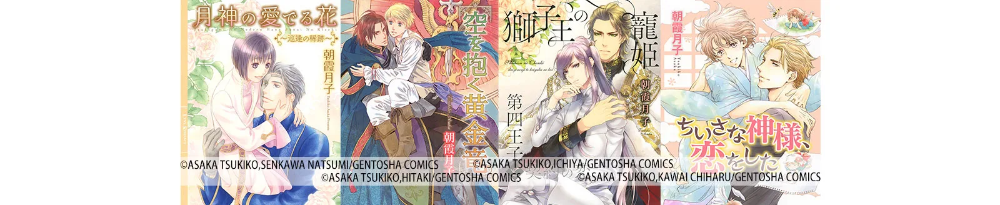
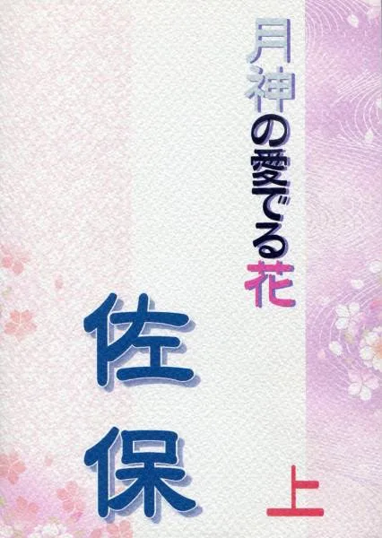
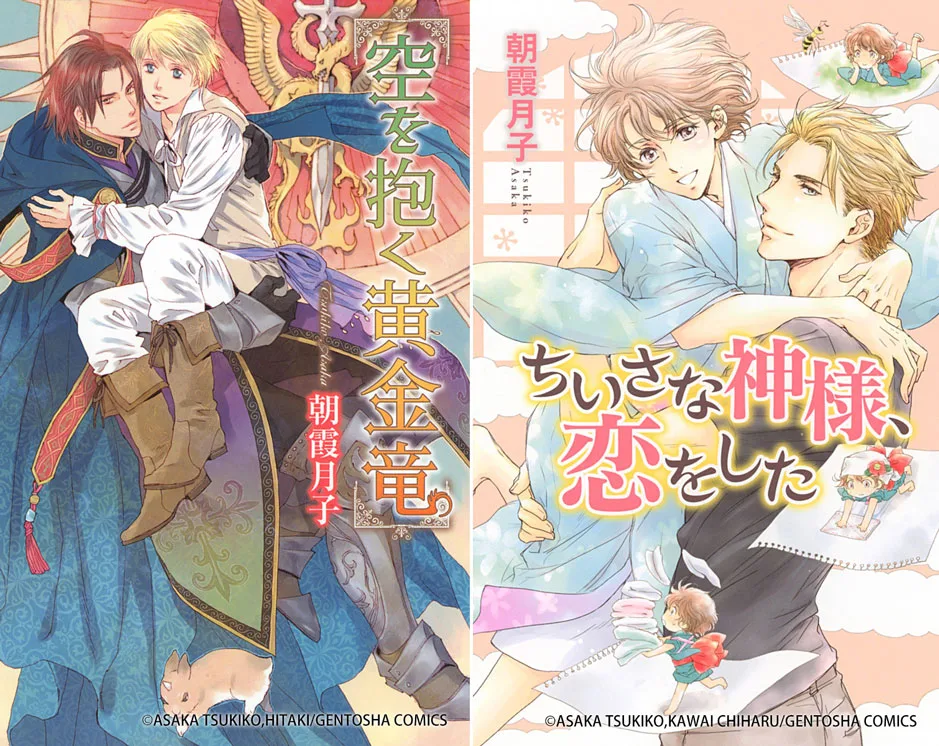

HOPE TALK
第一線で活躍するクリエイターたちは、一体どのようにして自身のキャリアを切り拓いてきたのでしょうか？
現役のクリエイターたちを招き、彼らを「印刷会社」という立場から支えるホープツーワンの熟練社員、出口竜がその秘密に迫る対談企画「ホープトーク」。
今回のホープトークでは、小説家として活躍中の朝霞月子さんにインタビュー。朝霞さんのこれまでのキャリアや作品作りへのこだわりを伺います。プロとして第一線で活躍するために必要なの要素とは一体何なのでしょうか？
朝霞月子
同人活動を経て、同人誌『佐保 月神の愛でる花』が出版社の目に留まり、雑誌リンクス『月蝶の住まう楽園』（幻冬舎コミックス）で商業誌デビュー。ファンタジックな世界観が魅力的なBL作品を出版。代表作は『月神の愛でる花』シリーズ、『シルヴェストロ国騎士団』シリーズなど。最新作は『獅子王の寵妃 第四王子と契約の恋』（2018年4月時点）。
 出口竜
出口竜
本社工場勤務。入社二十云年。製本を経験してから印刷へ。主に表紙多色刷を担当し、その後製版も学ぶ。
目次
・高校時代の“見せ合いっこ”から始まった小説家への道
・出版社からのオファーがきっかけ！“萌え”への想いを胸にプロデビュー
・燃えたぎる萌えへの想いを昇華！朝霞月子が描き出す世界観とは？
・自分の“表現や世界観を深く大きくすること”がプロへの道を開く
・まとめ
高校時代の“見せ合いっこ”から始まった小説家への道
―朝霞さんは、いつ頃から小説家になろうと考えたのでしょうか？
「小説を書き始めたのは高校のときで、友人とノートに書いて互いに見せ合っていまして、そこから作家という職業になれたらいいなと思うようになりました。」
―なるほど、高校時代から自然に文章を楽しんでおられたんですね。その頃書いていた小説のストーリーはどのようなものだったのでしょうか？もしよろしければ教えていただけませんか？
「夢見るお年頃だったので今でいうTL(ティーンズラブ)風味のものやミステリー、学園ものなどさまざまです。そのときに考えていた名前や設定の一部は今でも時々参考にしたり取り入れることもあります。」
―なるほど。では、同人作家として本格的に自分の作品を作り始めたのは高校卒業後？
「いえ、社会人になってからです。それまで同人誌というものの存在を知らなかったものでして。知人に地元のイベントに連れて行って貰ってこういう表現の場があるんだ！と覚醒したんです（笑）。もっと早く知っていたら！とは思いました。イベントに通う間に自分でも書いてみたいという想いがフツフツと沸いてきて、作家を目指すようになったんです。」
―なるほど、ではプロデビューする前は同人作家として活動しながら他のお仕事もしていたのですか？
また、当時は自分のキャリアについてどのように考えていたのでしょうか？
「大学卒業後に普通に就職です。落ち着いてから改めて好きなものにはまったといいますか。出不精でコミュ力不足人間なので、できれば自宅が仕事場の作家だけで生活できればと思っていました。同時に、実際には簡単になれるものではないのもわかっていたので、堅実に仕事しながら書いていました。自分の中に燃えたぎる“萌え”を昇華する場（イベント）が多くなったのは嬉しいですね。」
出版社からのオファーがきっかけ！“萌え”への想いを胸にプロデビュー
―その頃から、しっかりとしたキャリアプランを描かれていたんですね。そこからデビューまではどのような流れで？
「出版社の方から声をかけていただいたのがきっかけです。一次創作ではじめて出したファンタジー『佐保』（『月神の愛でる花』の旧メインタイトル）を商業誌として出してみないかというお話から、『月蝶』で雑誌デビュー、同人誌『佐保』をまとめたものをサブタイトルをメインタイトルに昇格して新書『月神の愛でる花』が発行という流れでした。今はほのぼのファンタジーを書く人というイメージが定着しているようです。」

▲代表作『月神の愛でる花』の元となった同人誌『佐保』。表紙には五感紙キラという特殊な紙を使用。印刷はホープツーワンが担当。
―デビューが決まったときは、まさに「夢が叶った」瞬間だと思います。やはり嬉しかったですか？それとも不安の方が強かった？
「嬉しさ半分怖さ半分で、どちらかというと怖さの方が大きかったです。期待外れだったらどうしよう、売れなかったらどうしよう、思い切りけなされたらどうしよう……とネガティブな思考が頭の中でぐるぐるまわっていましたね。その一方で頑張らなきゃ！という気持ちも強くて、ドキドキとビクビクが同居している状態でした。今でも新刊出すたびにドキドキですよ 」
―ご自身の作品がはじめて世に出たとき書店に見に行かれましたか？
「はい、書店に買いに行きました。でも、地方なので雑誌は当日発売じゃなくて翌々日に買った記憶が……。今は割と発売日当日に並んでいるみたいですが、新書でも下手したら朝一に行って買えないこともあるので、通販サイトで購入した後、実店舗に行って買うということを繰り返しています。第一作目の新書が出たときにはしばらくお店でウロウロして誰か買ってくれないかなあと眺めていました。アヤシイ人でしたね。今でももちろん、しばらくは売り場にいますよ。」
―期待と不安が入り混じった当時の朝霞さんの心情が思い浮かびます（笑）イメージ的に実際に本屋に自分の作品が並ぶのを見ると「プロになったんだ」という実感が沸くのでは？と感じたのですが、実際はいかがでしたか？
「どちらかというと本が夢ではなかったんだなととても感動したのを覚えています。事前に頭の中ではわかっていても、完成した本が並んでいるのを見るのとでは感動の度合いが違いました。 」
―デビュー当時を顧みて、出版社から声をかけてもらえた要因は何だったのでしょう？
「良い読者さん、良い編集者さん、良い出版社と出会えたことが一番です。私の書いた話を好きになってくれた読者の皆さんには本当に感謝しかありません。」
―印刷はその頃からホープツーワンを？
「実は使い始めたきっかけは、“特殊紙”をセットで表紙に使える印刷所だったからです。五感紙キラという控え目な凹凸と輝きのある紙で、『月神の愛でる』の元となった同人誌『佐保』から使わせていただいて、内容とは全く関係ないイメージ重視で選んだ和風柄に合うものがこちらにしかなかったんです…。今はセットの中からなくなってしまって残念ですが、今では締め切りの遅さ（ご迷惑をおかけしております）と安さと入稿のしやすさを重宝しています。」
燃えたぎる萌えへの想いを昇華！朝霞月子が描き出す世界観に迫る
―続いて、朝霞さんの作家としてのスタイルやこだわりについて伺っていきます。まず、BLというジャンルを選ばれたのはなぜだったのでしょう？
「そこに萌えがあったから！というのはありますが、美形やハンサム、ナイスガイを見るのが好きだというのはあると思います。自分好みの男性が女性とくっつくより、同じ自分好みの男性とくっついた方が好きなのだと思いますよ。ですから、BLを選んだというよりも自然にそうなっていたというのが正しいかと思います。いつの間にか好きになっていた」
―さきほど“燃えたぎる萌え“と表現されていましたが、朝露さんにとってそれがBLの中にあったのですね。例えば、作品に触れ続けることで”想いを昇華させる“という方法もあると思うのですが、なぜ創る方向に情熱を傾けたのでしょうか？
「自分の中の違和感を解消するためというのが一番わかりやすい理由だと思います。要は自分の好きな展開に持って行けるのが大きい。ラノベ的にいうなら王道か非王道かということです。Ａという王道パターンの作品があったとして、そうじゃない方がいいよねと非王道的展開を求めてしまう天邪鬼。となるとやはり自分で書くのが一番ストレスもなく自由に昇華させることができるのです」
―作品に触れたときの違和感やもっとこうしたいという想いが創作の源になっているんですね。そんな朝霞さんのらしさが詰まった、もっとも「自分らしい」と思う作品は何でしょう？
「『空を抱く黄金竜』です。意外と思われるかもしれませんが、騎士団ものや戦闘シーンがとにかく好きなんです。このときは完全にキャラの姿が頭にあって、それに向かって突き進んで書いたー！という達成感がありました。もう一つ、『小さな神様、恋をした』も自分らしいと思います。なぜならエロがない。それだけで私らしいです。」

▲朝霞さんの“らしさ”が詰まった2作品。
―BLにおいてエロ要素は、喜ばれる表現のひとつだと感じています。そういったシーンがないのが自分らしいと感じられるのはなぜでしょうか？
「えっちシーンは話の流れで出て来るものであり、必ずしも必須ではないという思いがあるからです。だからなくても別に困らない。愛情を表現するためのえっちシーンはもちろん大切ですが、じゃれあっているだけでも十分萌えます。」
―そんなご自身の世界観を文章で表現する上で、何か意識していることやこだわっていることはありますか？
「難しい言葉や言い回しを使わないこと。造語以外でルビを打たなきゃいけない難読熟語は避けるように心がけています。また、台詞と地の文がスムーズにつながるように意識しています。理想は柔らかな言葉と表現なのですが、なかなか難しいです。それから情景描写は想像しやすいよう、頭の中に描いたものをそのまま言葉にするようにしています。」
―小説を本という商品にする上で、表紙などのイラストも世界観を伝えるための大切な要素だと思います。表紙や挿絵のイラストを依頼する際に注意しているポイントは何かありますか？
「体幹がしっかりした絵、動きのある絵に惹かれます。ファンタジー系が多いので装飾品も多い上、想像上の“もふもふ”がよく登場するので動物は必須です。戦シーンも多く入れるのと、戦う男が好きなので武器防具はこだわりを持って描いていただければ。不思議な色合いの髪や目も登場するのでその辺りも慎重にお依頼しますね。」
自分の“表現や世界観を深く大きくすること”がプロへの道を開く
▲『月神の愛でる花』の表紙。
―高校時代の朝霞さんのように、小説家を含め自分の世界観を表現する職業に就きたいと考えている学生はたくさんいると思います。学生のうちにやっておいた方が良いことはありますか？
「本を読むこと。マンガでもいいんですよ、文字を目で追って読むという行為が大事です。そのついででいいので、『自分ならこうする』『こんな台詞じゃない方がいい』と思考を活性化させてあげるといいですね。ドラマや映画でも同じです。自分なりに分岐点を作って妄想を広げることが、自分だけの物語を作るきっかけになると思います。」
―何かに絞って訓練するよりも、いろいろなものを吸収して自分の世界を育むことが大切なのかもしれませんね。他に、朝霞さんが実践していることはありますか？
「同じ世界に閉じこもってしまうとやはり視野が狭くなってしまうので、身近なところで博物館や科学館に出かけたり、いつもとは違うことに触れてリセットして、新しいことを自分の中に取り込むことがとても大切だと思います。何でもいいんです。私はマンションや家のモデルルーム見たり図面見るの好きですし、突発的にプラネタリウムを見に行きもします。ゲームも大好きです。嫌いだったり苦手だと感じていることでも、一通りは試してみることで“自分の表現の土壌”を育めるような気がしますね。」
―ありがとうございます。最後に今後の展望について可能な範囲で聞かせていただけますか？
「ネタバレにならない範囲で……。私、廃ゲーマーなのでMMO（大規模多人数同時参加型RPG）やVR（仮想現実）ものは書く予定です。BLというジャンルの枠を超えたファンタジーを完成させるのが目標です。」
―朝霞さんの次なるファンタジーを楽しみにしています。今日は貴重な時間を誠にありがとうございました！
まとめ
「燃えたぎる萌えへの想い」を胸に、堅実に働きながら自分の夢を実現させた朝霞さん。
そんな朝霞さんが実践していたのは、小説・本・マンガ・映画・ドラマなど、物語に触れるときに「自分なら……」と他のストーリーをイメージする方法や自分の世界を広げるためにさまざまなことにチャレンジするというシンプルなこと。
ですが、これを日常的にやり続ける根気や想いがなければ、イメージはイメージのまま終ってしまうでしょう。
これから本気でプロを目指す方、どうしても書きたい物語があるという方は、朝霞さんのように物語に触れるたびに「自分なら……」を紡ぎあげ、少しづつ自分だけの表現を深く大きく広げていきましょう。
日々の小さな積み重ねは、きっとあなたにしか描けない物語とつながっているはず。
着実に一歩一歩、プロへの道を歩み始めましょう。
朝霞月子先生
同人活動を経て、同人誌『佐保 月神の愛でる花』が出版社の目に留まり、雑誌リンクス『月蝶の住まう楽園』（幻冬舎コミックス）で商業誌デビュー。ファンタジックな世界観が魅力的なBL作品を出版。代表作は『月神の愛でる花』シリーズ、『シルヴェストロ国騎士団』シリーズなど。最新作は『獅子王の寵妃 第四王子と契約の恋』（2018年4月時点）。